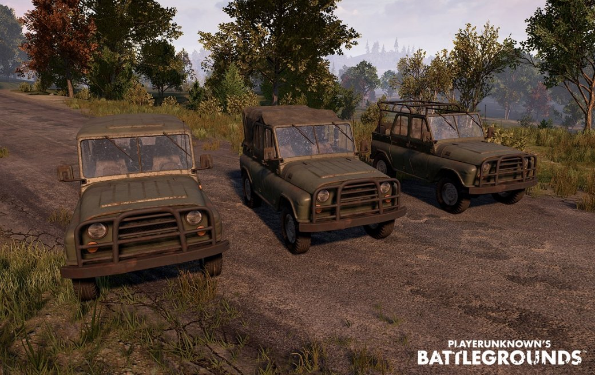
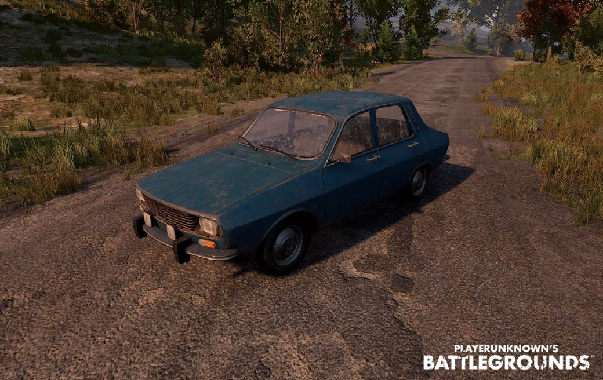
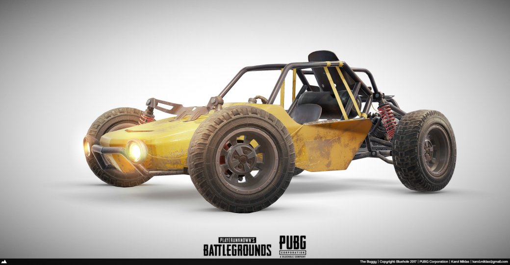

УАЗ-469
Технические характеристики машины:
- Количество мест: 4
- Максимальная скорость: ~ 99 км/ч
- Плюсы: Хорошая проходимость и управляемость, быстро набирает скорость, машина вместительна
- Минусы: Малая прочность, небольшая макс. скорость и большой расход топлива
- Машина доступна только на Эрангеле
В игре УАЗ представлен в трех вариантах: с закрытой крышей, с мягкой крышей и открытым верхом. Эта машина пройдет там, где не пройдет «дача». Но лучше использовать УАЗ с закрытой крышей: вы будете защищены от обстрелов, в то время как на «уазике» без крыши вас будет намного проще убить. Если планируете провести за рулем «уазика» много времени, то не забудьте обзавестись канистрой — машина «кушает» слишком много бензина.
Седан Dacia 1300
Технические характеристики машины:
- Количество мест: 4
- Максимальная скорость: ~ 113 км/ч
- Плюсы: быстрая и закрытая со всех сторон, не так быстро взрывается после попадания пуль, вместительна и экономична в плане расхода топлива
- Минусы: для передвижения по горам не предназначена, плохо набирает скорость
- Машина доступна только на Эрангеле
«Дача» — одна из лучших машин в игре. Единственный серьезный минус седана — он не предназначен для езды по скалистой местности. В остальном — это очень быстрая машина со средней управляемостью. А еще седан закрыт со всех сторон. Прототипом этой машины в игре является румынский автомобиль «Dacia 1300» 1969 года выпуска.
Багги
Технические характеристики машины:
- Количество мест: 2
- Максимальная скорость: ~ 100 км/ч
- Плюсы: проходимость по горам, удобна в управлении, мало расходует топлива
- Минусы: только 2 места, открытый каркас, низкая скорость и большие колеса, которые легко пробить выстрелом
- Машина доступна на Эрангеле и Мирамаре
Шумное, медленное и открытое со всех сторон транспортное средство. Доступно лишь два места: водитель располагается впереди, а пассажир — сзади на двигателе. И теперь представьте себя на месте пассажира… При этом багги — не самая быстрая машина в игре, но одна из самых удобных в управлении.